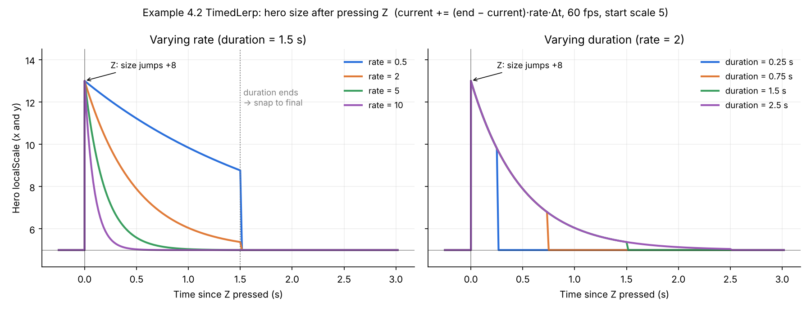
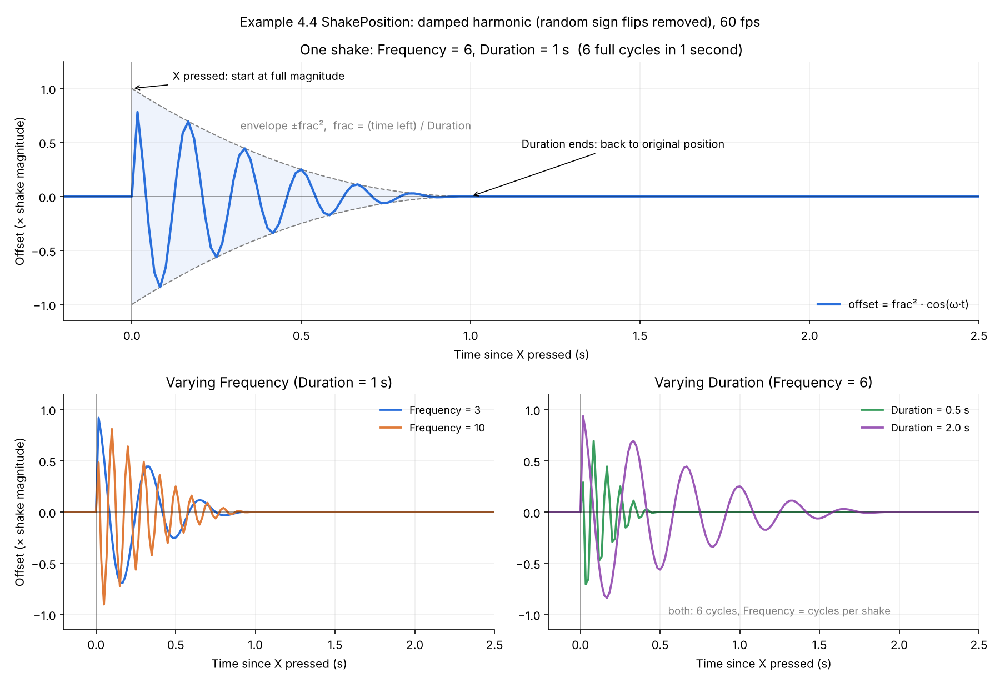
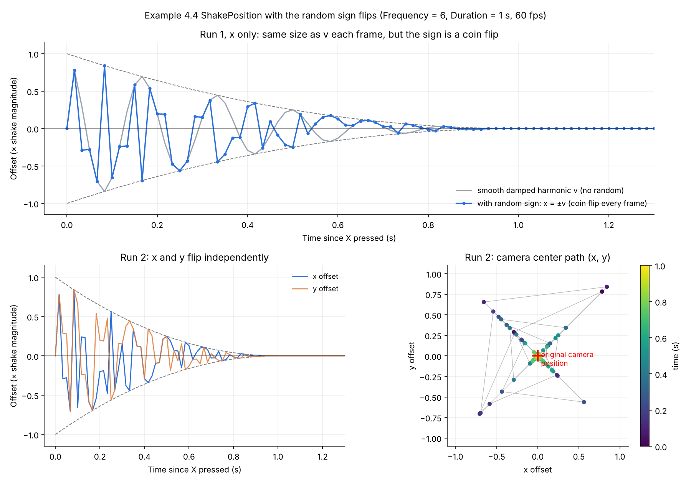

All About the Camera, Familiar Functions and Views
Coverage
🛠Unity skills
- Manipulating the camera
- Working with viewport
- Changing scenes
- Information persisting across scenes
💡Concepts
- More about the lerp function
- Camera views and the game world
- Soft and hard camera movement: lerp and shake
- Working with familiar functions
Examples for Module 4
Basic Camera Controls
| N | Move the camera by (x, y), from the X/Y slider bars |
| M | Move the camera to (x, y), where Dye is located |
| H | Zoom with respect to the center (zoom factor slider bar) |
| J | Zoom with respect to Dye (zoom factor slider bar) |
Scene setup
- MainCamera: has CameraSupport.
- UI-Canvas: X/Y/Zoom sliders (all connected to UserControlLogic).
- TheWorld: has UserControlLogic (an empty GameObject, for organization).
- Background:
z = 1(larger than the hero and egg) - Hero and Egg
- Background:
CameraSupport
mTheCamera: reference to the cameramWorldBound: the current bounds of the world- Behavior: recomputes the world bound only when the camera changes (each move or zoom function calls
UpdateWorldWindowBound());Update()doesn't recompute it every frame - Functions:
GetWorldBound(): gets the current world boundsCollideWorldBound(): collides a bound (of an object) with the world bound and returns the collision statusClampToWorldBound()- Move/Zoom
PushCameraByPos()
UserControlLogic
A central object that receives and parses user input.
- Connects to the UI sliders and other GameObjects.
- Transmits user input to GameObjects to cause changes.
Camera folder
CameraSupport: seen this before; new functionClampToWorldBound().CameraSupport_Manipulate: manipulates the connected camera:MoveBy,MoveTo,Zoom(toward the center),ZoomTowards(a point),PushCameraByPos().
Testing
- HeroControl (on the Hero):
CollideWorldBoundcode, and PushCamera. - EggBehavior:
ClampToWorldBound(always inside).
- Camera manipulation: simple changes to the camera's transform (position) and
orthographicSize. Note the partial class that separates the implementation into logical units. - Depth layering: Background at
z = 1(behind the Hero and Egg) - Unity: slicing a sprite sheet
- The camera is at x = 0 and Dye is at x = 10. You call
ZoomTowards(DyePosition, 0.5f)(zoom in). Where does the camera end up, and where does Dye appear on screen?Show answer
The camera moves to x = 5:
delta= (10 − 0) × (0.5 − 1) = −5, and the camera moves by −delta, so +5. Its size halves, so the view is half as wide. Dye was 10 units right of center in a view twice as wide; now Dye is 5 units right of center in a view half as wide, so Dye stays at the same spot on the screen. That's what zooming “toward” a point means. HeroControlcallsPushCameraByPos(transform.position, 0.8f). How close to the edge of the view can the hero get before the camera starts moving?Show answer
To within 10% of the view's width (or height) from each edge. The region
0.8shrinks the bound to 80% of the view around its center, leaving a 10% margin on every side. When the hero's position leaves that inner box, the camera is pushed just enough to bring it back to the edge of the inner box.
Taking a Closer Look at Lerp
- The hero grows by 8 units (
kDeltaSize; in the scene, from a scale of 10 to 18) and tries to lerp back gradually. - If you keep increasing the size before it lerps back to the original, there's net growth.
- This is easy to avoid in HeroControl. How? E.g., ignore the Z key when
LerpIsActive().
Examine the TimedLerp class
- Performs a lerp for a fixed duration.
- The rate is in units of seconds (easier to think about?).
- Rate and Duration are sliders in the UI-Canvas.
What the lerp looks like: hero size over time

localScale) after pressing Z. Simulated at 60 fps with a starting size of 5 (the scene's hero starts at 10: the curves have the same shape, just 5 units higher). Left: varying Rate (Duration = 1.5 s). Right: varying Duration (Rate = 2).- At time 0 (Z pressed): the size jumps up by
kDeltaSize(8 units), then lerps back towards the original size. - Each update:
mCurrent += (mEnd - mCurrent) * (mRate * Time.smoothDeltaTime)- The hero covers a fixed fraction of the remaining distance every frame: large gap, large change; small gap, small change.
- This is why every curve starts steep and then flattens out (exponential decay).
- Rate (left plot): larger rate, faster shrink. With Rate = 10 the hero is back to normal in about 0.5 seconds.
- Notice: on its own, this lerp never quite reaches the end value!
- Duration: when time is up,
UpdateLerp()simply sets the size to the end value.- Look at Rate = 0.5 (blue, left plot): the hero is still big at 1.5 seconds and snaps back to normal size.
- Duration (right plot): all curves follow the same path. Duration only decides when the snap happens, it does not change how fast the hero shrinks.
- Try: in the running example, set a small Rate with a short Duration and watch for the snap. Then try a large Rate with a long Duration: smooth, no visible snap.
Look at HeroControl
BeginLerp()to begin. You don't always needSetLerpParms()if you know the values.LerpIsActive()to receive proper lerp results.
TimedLerp: a pretty handy class in general? Note that it is not a MonoBehaviour!- So you create it yourself with
new, and its constructor runs:HeroControlhasnew TimedLerp(1f, 0.5f), which callsTimedLerp(float timeInSeconds, float rate). For a MonoBehaviour it's the opposite: Unity creates the component, so you don't write a constructor and do your setup inAwake()orStart()instead.
- So you create it yourself with
- On testing: use a separate, trivial test environment, and test all aspects.
- Pressing Z repeatedly makes the hero grow for good. Look at
HeroControl: why doesn't it shrink back to the original size?Show answer
Each press reads
finalScale = transform.localScaleas the lerp's end value. If the hero is still enlarged from the last press, that end value is the enlarged size, not the original. Each press then adds 8 more and lerps back only to that larger size, so the growth accumulates. TimedLerptimes itself withTime.realtimeSinceStartup, but moves withTime.smoothDeltaTime. If the game were paused withTime.timeScale = 0during a lerp, what would happen?Show answer
The size would stop changing, because
Time.smoothDeltaTimedrops to 0 when time is paused. ButTime.realtimeSinceStartupis real time and keeps running, so once the Duration passes, the hero snaps to the end value while the game is still paused. UsingTime.timefor the timer would pause it too.
More Respectful Camera Manipulation
CameraSupport
- Position lerp and size lerp.
Update()must check whether lerps are running, and set the camera accordingly.
TimedLerp class (lerping the camera position and size).- You press N to move the camera by (20, 0), then press it again before the first move finishes. Does the camera end up 40 units to the right?
Show answer
No, a bit less.
MoveBy()starts a new lerp from the camera's current position to that position + 20. Because the first lerp hadn't finished, the second one starts from somewhere short of +20, so the camera ends up short of +40. ZoomTowards()starts two lerps, one for the position and one for the size, and both use the same Rate and Duration. Why does that matter?Show answer
The point you zoom toward stays put on screen only if the position and the size change together. With the same Rate and Duration, both lerps cover the same fraction of their change every frame, so they stay in step. If one ran faster, the point would drift across the screen during the zoom and then settle back.
Shaking
- X: shake the camera (the boss is coming!). The sliders set the shake's Frequency, Duration and size (DX, DY).
- M: move the camera to Dye, as before.
- N: move the camera by a fixed (5, 5): the X/Y sliders from 4.1 now set the shake size instead.
- H / J: zoom out by a fixed factor of 1.1, toward the center / toward Dye.
- Z: grow the hero and lerp it back, as in 4.2.
Utilities/ShakePosition
- Samples a damped harmonic function
- Number of cycles
- Length of the shake duration
What the damped harmonic looks like: offset over time

UpdateShake() removed. Top: one shake (Frequency = 6, Duration = 1 s). Bottom left: varying Frequency. Bottom right: varying Duration.- At time 0 (X pressed): the offset starts at the full shake magnitude.
- Each update:
NextDampedHarmonic()computesfrac * frac * Mathf.Cos(t * mOmega)frac = mSecLeft / mDuration: fraction of the shake time left, goes from 1 down to 0.- Cos: swings back and forth between +1 and -1 (the harmonic).
- frac2: the envelope (dashed lines), shrinks the swings over time (the damping).
- Duration ends:
ShakeDone()is true,UpdateShake()returns the original position. Notice: frac2 is already 0 by then, so there is no visible jump at the end. - Frequency (bottom left): larger value, more swings within the same Duration.
- Duration (bottom right): with Frequency = 6, both shakes have exactly 6 swings, the longer one simply stretches them out.
- WATCH OUT: Frequency here is NOT cycles per second! Recall that
mOmega = (frequency / mDuration) * 2π, so Frequency is the total number of cycles in one shake. - Try: in the running example, use a small Frequency with a long Duration (slow wobble), then a large Frequency with a short Duration (a quick, sharp hit).
With the random calls: what the shake actually does

UpdateShake(), random sign flips included. Frequency = 6, Duration = 1 s, DX = DY, simulated at 60 fps. Top: Run 1, x only. Bottom: Run 2, x and y offsets over time (left) and the camera center path (right).- Each update, in
UpdateShake():v = NextDampedHarmonic(): the smooth value from the previous plot.fx,fy:Random.Range(0f, 1f) > 0.5fflips a coin, the result is either-vorv.- Offset:
mShakeDelta.x * fxandmShakeDelta.y * fy.
- Top plot (Run 1, x only): gray is the smooth v, blue is the actual x offset.
- Every frame, the size of the offset is exactly the size of v, only the sign is random.
- The camera jumps from one side to the other in an unpredictable pattern, but still stays inside the shrinking envelope.
- Note: only the dots are real (one per frame), the lines simply connect the frames. The camera stays at each dot for the entire frame.
- Notice (top plot, 3rd and 4th dots): two frames in a row can look almost the same (-0.29, then -0.28)!
- Frequency = 6 in 1 second at 60 fps is exactly 10 frames per cycle, so the frames land evenly on both sides of each zero crossing (v = +0.29, then -0.28).
- The coin flipped the first one and kept the second one: both ended up on the same side.
- Bottom left (Run 2): x and y flip independently, they are often on opposite sides. A different run gives a different pattern every time you press X.
- Bottom right (Run 2, camera center path): the dots are colored by time, the camera starts far away (dark) and ends at the original position (red +).
- WATCH OUT: the camera only moves along the two diagonals!
- x and y always have the same size (v), only the signs differ, so |x| = |y| (when DX = DY).
- With DX ≠ DY: still only two (slanted) lines.
- Try: how would you change
UpdateShake()to shake in all directions? E.g., a separate random size for each axis.
CameraSupport_Manipulate
SetShakeParameters(): passes the Frequency and Duration on toShakePositionShakeCamera(): starts a shake from the camera's current positionCameraSupport.Update()then callsShakePosition.UpdateShake()every frame; when the shake is done, the camera returns to its original position
CameraSupportcreates its shake withnew ShakePosition(5, 0.5f). How many back-and-forth swings per second is that?Show answer
10 per second: 5 cycles packed into 0.5 seconds. Frequency here is the total number of cycles in one shake, not cycles per second, so the same Frequency with a shorter Duration shakes faster.
- You press M (the camera starts lerping to Dye), then X right away. What does the camera do during and after the shake?
Show answer
During the shake, it shakes around the spot where it was when you pressed X, not along the move: in
Update(), the lerp sets the position first, then the shake overwrites it with its saved origin plus an offset. The lerp keeps advancing underneath, so when the shake ends, the camera jumps to wherever the lerp has reached.
Orbiting
- Select the Hero in the editor and move it around (the egg follows).
- Select the Egg and change its Orbit Radius and Orbit Speed.
Scene
- The Egg is the satellite.
- OrbitControl › HostXform points to the Hero's transform.
OrbitControl.cs on the Egg (it can be on any object)
Literally 3 lines of code!
- With the default Orbit Speed of
360 / 10, how long does one orbit take? What happens to the orbit if you rotate the Hero by 90 degrees?Show answer
10 seconds (36 degrees per second). Rotating the Hero changes nothing:
OrbitControluses only the Hero's position, plus the Egg's owntransform.right, so the Hero's rotation never enters the calculation. - Watch the Egg closely: it turns as it orbits. Why?
Show answer
The orbit works by rotating the Egg itself a little every frame, then placing it at
host + OrbitRadius × transform.right. Its own right direction sweeps around the circle, so the Egg turns once per orbit and always faces the same way relative to the Hero, like the Moon facing the Earth.
Viewport and Hero Cam
- A small camera (HeroCam) follows the hero. The four sliders set the small view's Viewport Rect: X, Y, W and H.
- Same keys as 4.4: M, N (fixed (5, 5)), H/J (zoom out by 1.1) and Z. X shakes the main camera with a fixed size of (3, 3), since the sliders now control the viewport.
Two cameras, one background
The Background is at z = 30.
| Setting | Main Camera | Small cam (HeroCam) |
|---|---|---|
| Position z | -10 | -10 |
| Far | 50 | 30 |
| Background | 40 units away, so it can see the background | 40 units away, so it can't see the background and shows a constant background color |
| Projection | Orthographic | Orthographic |
| Depth | -1 | 0: anything greater than the Main Camera's -1 (the bigger the number, the more in front) |
To make the small cam, create a new Camera, and check out its Viewport Rect setting.
Scripts
- CameraSupport:
SetViewportMinPos(x, y),SetViewportSize(w, h) - UserControlLogic (testing): sliders connected to the HeroCam change the small view's viewport settings.
- HeroControl: changes the small view's camera position.
- What does it mean to zoom in the small view?
- What does the small view's
orthographicSizemean?
- What a viewport is, and its settings
- How to work with the Unity viewport
- The Background is at z = 30, 40 units in front of both cameras. What's the smallest Far value that lets HeroCam show the Background?
Show answer
Anything over 40. HeroCam's Far is 30, so the Background, 40 units away, is beyond what it draws and it shows its plain background color. The Main Camera's Far is 50, so it draws the Background.
- You set a camera's Viewport Rect to X = 0.75, Y = 0.75, W = 0.25, H = 0.25. Where does its view appear, and how big is it?
Show answer
In the top-right corner, a quarter of the window's width and a quarter of its height. Viewport Rect values are fractions of the window, measured from the bottom-left corner (0, 0) to the top-right corner (1, 1).
New Scene
Unity details
using UnityEngine.SceneManagement;SeeSceneManager.LoadScene↗.
Level persistence: singleton pattern
- GameState class: printed from UserControlLogic.
- NewLevel level: simply echoes. The values persisted across levels!
Organization
- Level-specific folders:
- Level-specific behavior:
NewLevelGameManager - Level-ClassExample:
HeroControl,EggBehaviorandUserControlLogic
- Level-specific behavior:
- Moved Camera into Utilities.
- All GameObjects are erased when a new scene is loaded.
- You must take special care (e.g., the singleton pattern) to create and maintain info across scenes.
- Unity how-to: create/load a scene.
- Loading NewLevel erases every GameObject, yet the shake and lerp counts survive. Why does
GameStatesurvive?Show answer
GameStateisn't a GameObject or a component: it's a plain C# class, andsGameStateis astaticfield. A static field belongs to the class itself and lives for as long as the program runs. Loading a scene destroys GameObjects, but it doesn't touch static data. - You add a third scene, Boss, and call
SceneManager.LoadScene("Boss"), but you forget to add it to the Scene List in File › Build Profiles. What happens?Show answer
The scene doesn't load, and Unity logs an error saying the scene couldn't be loaded because it hasn't been added to the build.
LoadScene()can only load scenes in the Scene List, even in the editor.